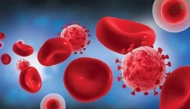
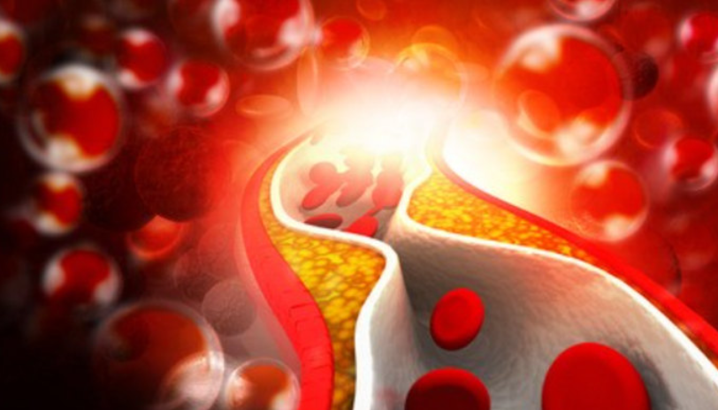

年后肝"负重"？百年春护肝美颜能量抗衰老针——给肝"松绑"，让脸发光！
2026-03-01

About Us
关于百年春
造血干细胞是人类发现的最早的一种多功能的成体干细胞。自体造血干细胞是我们身体造血力和免疫力的细胞物质基础,同时也是身体综合修复力的经典代表。异体造血于细胞移植技术一直是血液恶性肿瘤的有效治疗技术。随着自体造血干细胞生产技术的研发成功,自体造血干细胞及其回输补充技术进一步展示了它不仅具备提升身体各种各样机能的能力,而且还具备大幅度延长自身寿命的能力。自体造血干细胞作为一种重要的生命能源细胞,在生命科学的多个应用领域扮演着越来越重要的角色。

自体造血干细胞的来源
造血干细胞是医学上血液病领域治疗研究最长和应用最早的一种干细胞。早期的骨髓移植治疗白血病大约开始于20世纪50年代。自体造血干细胞绝大部分都存在于我们的骨髓，还有一点存在于我们的外周血、肝脏和脐带血，数量很稀少。在骨髓和脐带血中，CD34/CD133/CD117的自体造血干细胞的浓度最高都不超过0.5%，数量极其稀少。然而，这些稀少的自体造血干细胞却是我们身体里所有血细胞和免疫细胞的唯一来源和种子细胞。
自体造血干细胞的功能
造血干细胞可以分化生成各种血细胞，包括红细胞、白细胞和血小板等。正常情况下，体内各种血细胞的数量和功能处于相对稳定的状态。这是机体新陈代谢的一种动态平衡，即衰老和死亡的细胞不断地被新生的细胞所替代，这个过程正是依赖于血细胞的鼻祖----造血干细胞。例如红细胞的平均寿命约为120天，白细胞的寿命为7~14天，血小板的寿命为7~10天。一个正常成年人每天约有10万个红细胞衰老死亡，同样也有数量相近的红细胞新生。
由自体造血于细胞生成的白细胞种类主要是免疫细胞，包括所有免疫细胞的种类和亚型，如大家熟悉的中性白细胞、单核细胞、自然杀伤细胞、T淋巴细胞、B淋巴细胞和巨噬细胞等免疫细胞。
造血干细胞这个造血种子细胞和免疫种子细胞，多年来一直是治疗白血病、再生障碍性贫血的主要生物学基础。但是，各种白血病和再生障碍性贫血正是骨髓的自体造血干细胞本身出现了肿瘤性的病变，导致各种白细胞病和再生障碍性贫血的发生。所以，血液疾病的常规临床治疗方法是，应用化学制剂先消灭机体的血液肿瘤细胞，同时由于化学制剂也杀灭正常的造血干细胞，抑制了骨髓的正常造血能力和免疫能力，再应用基因正常的异体造血干细胞的回输，重建机体的造血和免疫功能。因此，异体造血干细胞的白血病和再生障碍性贫血的治疗，一直是医学教科书上唯一有效的治疗方法。异体造血干细胞在血液疾病方面的治疗价值一直是显著的、有效的。为此，大半个世纪以来，围绕着异体造血干细胞治疗恶性血液性疾病，医学界形成了一系列行之有效的异体造血干细胞及采集、检测、组织配型、保存和应用的科学及与其相关的法律和法规。用异体造血干细胞治疗白血病、再生障碍性贫血等恶性血液病时，患者是要面临多种致命性的治疗处理风险，以及各种严重的，有时是致命性的副作用的，尤其是供体抗宿主的免疫排斥反应等，首先要以自身的造血功能和免疫功能为代价，之后再用异体造血干细胞重建身体的造血和免疫系统，各种毒副作用很大、很多。患者的异体造血干细胞的治疗过程，是一个惊心动魄的生死过程，所以各级医院的血源科在人才团队及抢救设备和洁净病房等方面，要求和配置比较高。

自体造血干细胞除了具有上述造血力和免疫力的纵向分化的重要功能之外，同时还具备横向分化的能力。此外，自体造血干细胞还可以生成神经细胞、心肌细胞、肌肉细胞、成骨细胞、软骨细胞等多种系统和器官的细胞。事实上，自体造血干细胞从骨髓的巢穴向血液流动，在全身各种器官中游走，就像一个城市的消防兵一样，哪个器官、哪些组织有了损伤和病变。自体造血干细胞就随着血管的血液向损伤灶和病灶自动趋向，自动修复机体其他器官和组织的损伤和病变。自体造血干细胞的这种多器官、多组织的多功能修复力是机体的一般性修复机制。自体造血干细胞的横向分化能力和自体间充质干细胞不仅是机体造血力、免疫力的源泉，而且也是机体的再生力、再造力、修复力、康复力和自愈力的源泉。
近30年来，科学界充分地证明了自体造血干细胞这种横向分化的潜能，显示了自体造血干细胞的多种功能不仅可以应用于血液病的治疗，而且还可以广泛地应用于多种器官和多系统疾病的治疗。近年来，自体造血干细胞和自体间充质干细胞已经成为再生医学和修复医学应用的主力军，这两种自体干细胞构成了再生医学和修复医学的基础。国内外，应用造血干细胞治疗各种各样疾病的研究论文，每年都有数万篇发表，可见这两种干细胞的影响力和重要性之大。
但是，自体造血干细胞和自体间充质干细胞只有在自身的生理条件下，且本身不被免疫排斥、不被破坏和不被消灭的环境下，才会有机会发挥它们的潜能，即造血力、免疫力、再生力、再造力、修复力、自愈力的正常能力和潜力的展现。异体造血干细胞在受体的各种免疫系统和免疫细胞的追杀和排斥下，是没有机会展示在再生医学和修复医学方面的功效的，更没有机会展示在生命科学领域的功能。
自体造血干细胞的多领域应用及研究
现在自体造血干细胞的应用，早已从单纯治疗血液性疾病的领域，延伸到治疗大多数自身的多发病、常见病和重大疾病，如冠心病、脑中风、糖尿病、肝脏疾病、胰腺疾病和肾脏疾病。自体造血干细胞不仅是精准再生医学和精准修复医学的重要内容，而且还延伸到了精准生命科学、精准预防科学、精准抗衰老保健科学、精准急救医学、特种军事医学和核辐射预防救护医学等领域。
自体造血干细胞在这些领域应用发展的重要条件之一，就是如何寻找到大规模的额外的自体造血干细胞，如何寻找到我们每个人的大规模的血液性和全身性的再生能源细胞。显然，这是一个重大的科学研究课题。